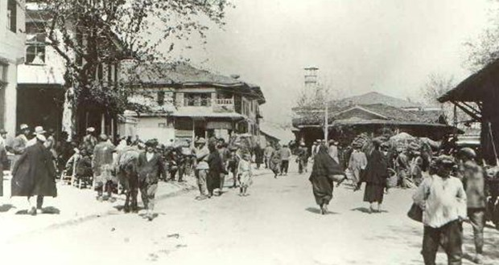

| Home page | History | Geolocation | Economy | Tourism | Culture and Art |
|---|---|---|---|---|---|
HistoryDenizli Region in AntiquityBeycesultan Tumulus is the first and most important settlement of Denizli region. (Today, Beycesultan is located 5 km south of Çivril district, just to the right of the Çivril-Denizli highway.) The settlement was built 6000 years ago in BC. It is predicted that it started with the Chalcolithic period in 4000 BC. When it comes to historical periods, the first known inhabitants of the Denizli region were the Arzawalis. After the Dark Age, which lasted between 1200-1700 BC, the Phrygians dominated the region. According to Xenephon, one of the most important settlements in the western borders of Phrygia was the city of Collosai (today Honaz). After the destruction of the Phrygians, the region passed into the hands of the Lydians. According to the famous Greek historian Herodotus, the eastern border of the Lydian State is the settlement called Karura. The city of Karura is located in Sarayköy district of Denizli today. The Western Anatolian region and therefore the Denizli region were connected to the Asian state by the Romans in 129 BC and started to be administered by the proconsuls. The Romans rehabilitated the existing roads in the Asian state and turned the road flow from Pergamon to Ephesus and Miletus. Denizli Region has become an important point in the east-west direction. As a result of the division of the Roman State into two in 395 AD, Anatolia remained under the rule of Eastern Rome, that is, Byzantium. During the Byzantine State, Denizli region lost its importance in Hellenistic and Roman periods and after a while it passed into the hands of the Turks who came to the region. Turkish Domination in DenizliThe first relations of the Turks with Denizli begin in 1070. After taking Honaz, one of the most developed cities of the region, the Great Seljuk Bey, Afşin Bey, plundered Laodikeia and advanced the invasion movement to the Aegean shores. However, this invasion movement was temporary. After the Battle of Manzikert in 1071, Anatolia was completely captured, meanwhile, Denizli was conquered by the Beys in the entourage of Kutalmışoğlu Süleyman. Denizli and its surroundings constantly changed hands between the Turks and Byzantines until the end of the 12th century, and finally, with the second accession of the Seljuk Sultan Giyaseddin Keyhüsrev, in 1206-1207, it completely fell into the hands of the Turks. Denizli Administrative Organization HistoryThe first Municipal Organization was established in Denizli in 1876. Denizli, which was turned into a "Sancak" with the connection of Sarayköy, Buldan and Tavas Districts in 1883, became the governor of Aydın with the participation of Çal in 1884 and Acıpayam in 1888, and became a province in 1923 with the establishment of the Republic of Turkey. Origin of Denizli NameDenizli's old name was "Ladik" or "Lazik". This word comes from the word Laodikeia and has no meaning in Turkish. The name "Ladik" was also inherited during the transition of the city of Laodikeia, which is located in the Upper Menderes Valley (6 km north of today's Denizli city), to the Turks. As there are Khonae-Honas, Khoma-Homa, Tabae-Tavas in the same region, Laodikeia took the name Ladik in accordance with this rule and was recorded in the Seljuk records as such. However, as a result of the relocation of the city to its present location with the Seljuk rule, the name "Toğuzlu" began to be used alongside the name "Ladik". With the use of the name “Toğuzlu” with the name “Ladik”, the names “Tonuzlu” and “Tonguzlu” were added to these words. Famous traveler Ibn-i Batuta says that the city of Ladik, which he visited in 1333, was also called "Donguzlu". He used the expression "Tonguzlu" in Mesalik Ül-Ebsar, which recorded roughly the same years. An Ilkhanid tax record of 1350 writes as "Tonguzlu". The writing of "Tonguzlu" is also seen in a calendar dated 1372. Timur's official historians also kept records as "Donguzlug" and "Tenguzlug". After these dates, we definitely see that the expression "Tonuzlu" is used instead of these expressions. As a matter of fact, the early Ottoman historians Nesri and Aşıkpaşazade used the spelling of "Tonuzlu" in their works. The transformation of the name “Tonuzlu” or “Tuzunlu” to “Denizli” in the XVI. It coincides with the second half of the century. We come across the use of "Dinuzlu" in an Ottoman record dated 1510. Travelers who visited the city during this period used the names "Denyzely", "Denizley", "Denisli", "Degnisli", "Denizli" in their works. But XVI and XVII. The name "Lazikkiye", which was the continuation of the Laodikeia - Ladik - Lazik line in the Ottoman period, was also used in the centuries. The name "Denizli" was widely used together with "Lazikkiye" only after 1675, and finally, after 1700, this usage was firmly established and gained the identity of a name that expresses the region until today. |
|||||